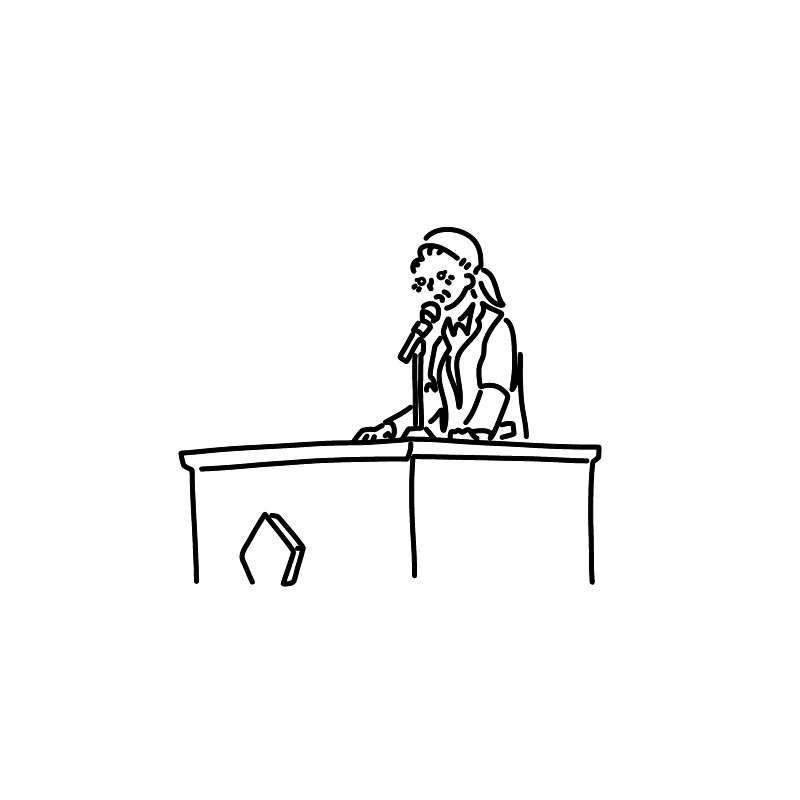

名前
小笠原 綾
おがさはら あや
Aya Ogasahara

私について紹介します。
小笠原 綾
おがさはら あや
Aya Ogasahara
京都府で生まれ千葉県で育ち、
小学生の時は外で朝から夜まで外で遊んでいる活発な子でした。
一方でピアノを10年以上習っており学生時代は合唱の伴奏をしていました。
その結果歌う機会が少なく音痴になってしまい今でもカラオケが怖くて行けません。
高校卒業後大学を1度も登校することなく3日でやめ、浪人を経て専門学校に入学し、
卒業後は私立文系大学２年次編入学しました。
現在国際関係について学びながら、中学・高校の英語科教員免許取得を目指している大学２年生です。
TOEIC740点・TOEFL550点 ハングル能力検定4級・日本茶検定2級 ソフトボール公式記録員第二種 現在簿記と普通二輪免許の取得を目指しています。
-優れるな、異なれ-
優れることに必死になっていた私にかけられたこの言葉は
どんな哲学よりも重く深く感じ今でも大切にしています
fes参戦・靴集め・革製品のお手入れ・香水集め・紅茶・バスケットボール・ネイル・ ラーメン巡り・推理作品鑑賞・陶芸・ギター・一人旅・マスカラ集め・地酒・掃除・ドライブ・お昼寝・ さつまいもの加工食品巡り・コーディング・プログラミング・
最後までご覧いただき有難うございます
Thank you for reading
until the end!